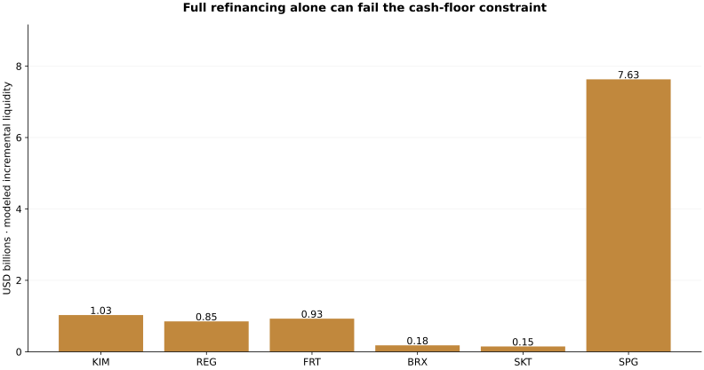

Observed evidence
Six original 2025 filings disclose $53.25bn of face principal; $31.23bn falls in 2026–2030. Parent, operating-partnership and unconsolidated-JV scopes are handled explicitly.
Decision implication
All six pass the unchanged-CFO/full-rollover baseline. 37 of 90 issuer/scenario combinations cannot satisfy all five cash floors using rollover alone. Only 0 issuers remain feasible across the expanded grid.
Validation and uncertainty
The 42 observed CFO values produce 36 annual changes. The worst decline is -38.90%, so the original 30% grid is supplemented by a 40% challenge. These shocks have no assigned probabilities. Analytical rollover bounds are independently reconciled to a linear-programming solver.
Financial evidence

Each issuer’s worst scenario in the disclosed grid. This is a conditional stress result, not its current financing requirement or a credit rating.
| Issuer | 2026–2030 principal | Baseline passes | Expanded grid passes | Worst modeled liquidity |
|---|---|---|---|---|
| KIM | $2,976,300,000 | True | False | $1,027,777,000 |
| REG | $2,733,944,000 | True | False | $850,161,920 |
| FRT | $4,162,543,000 | True | False | $925,820,810 |
| BRX | $3,418,453,000 | True | False | $178,379,070 |
| SKT | $1,201,405,000 | True | False | $146,406,550 |
| SPG | $16,736,925,000 | True | False | $7,631,161,390 |
Limits and adoption gates
Frozen December 2025 annual base, not current liquidity. CFO shocks are fixed level shortfalls, not compounded annual declines; the main grid holds them for five years, while a separate two-year/recovery case tests that conservatism. Historical severity does not establish persistence or probability. Constant cash distributions; assumed recurring capex, fees, cash floor and refinancing spreads; no new acquisitions, asset sales or equity issuance; no assumed available facilities; consolidated schedules exclude unconsolidated JV debt. Debt beyond 2030 is outside the runoff horizon. Real covenants, tax distributions and market access require additional diligence.